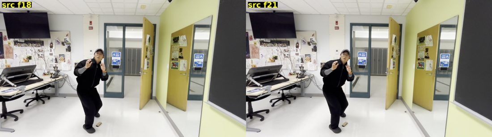
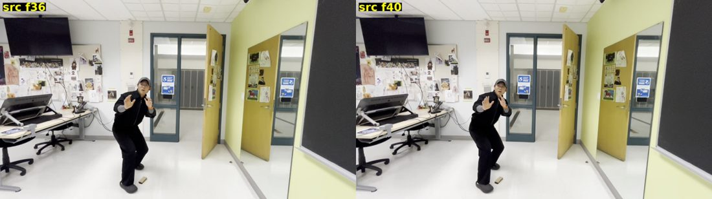

Crouch-Dance Animatic — Maya / 2D Planning
Pose-to-pose animatic study built around anticipation, a deep drop, and a springy bounce-back. Planned frame by frame before touching the rig — the drop and bounce stills above are the two key poses the whole shot hangs on.